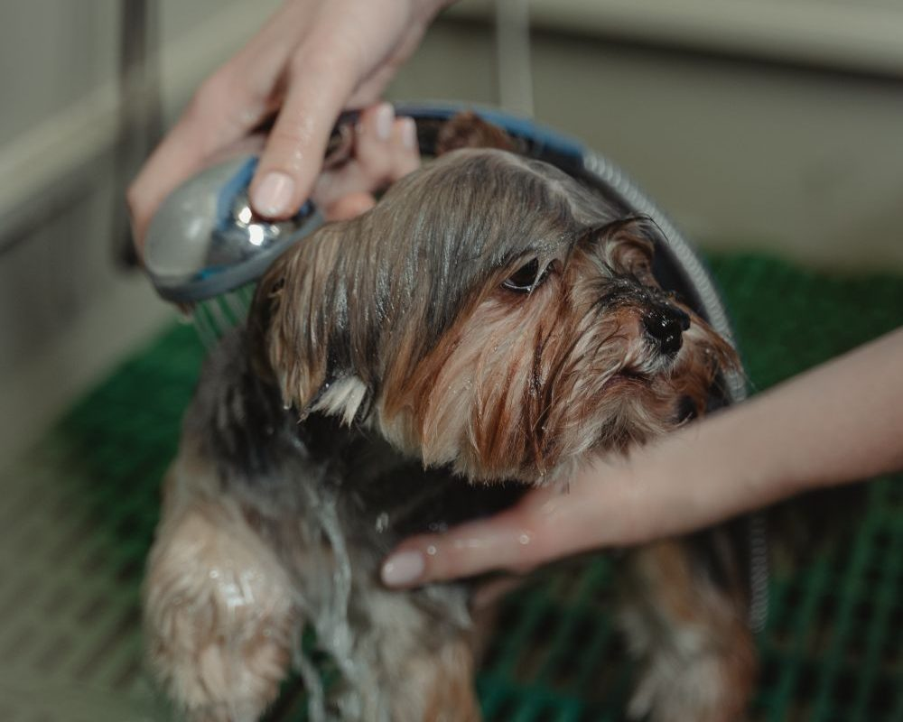
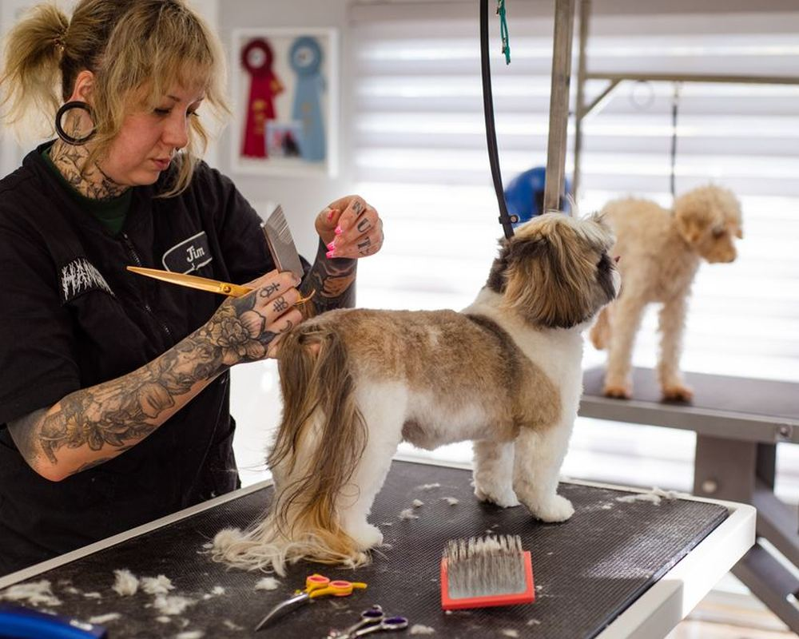
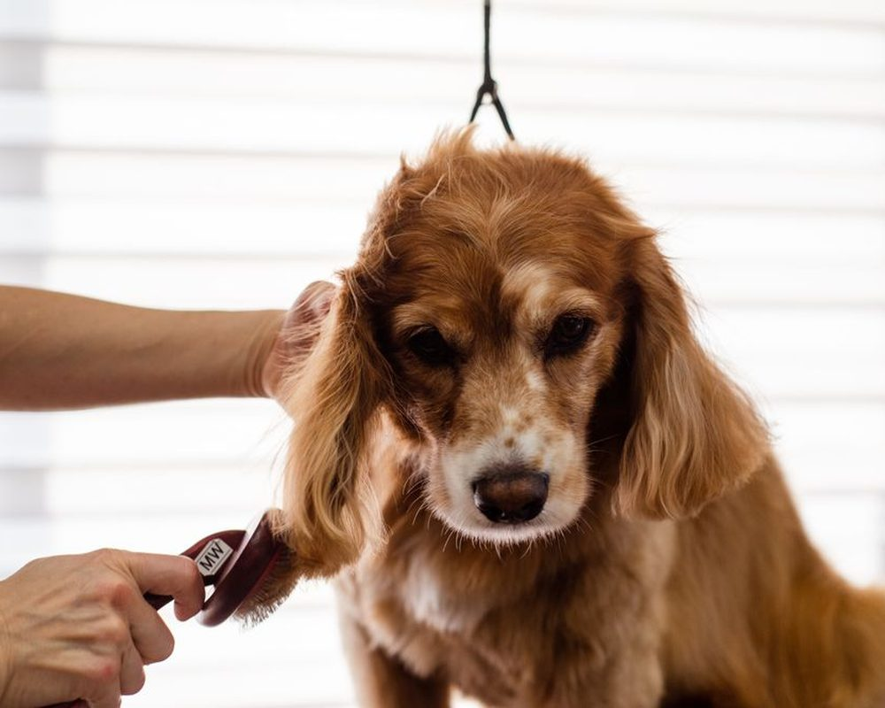
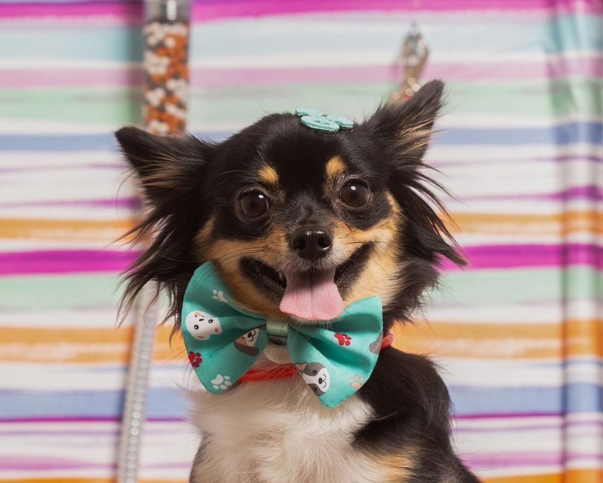
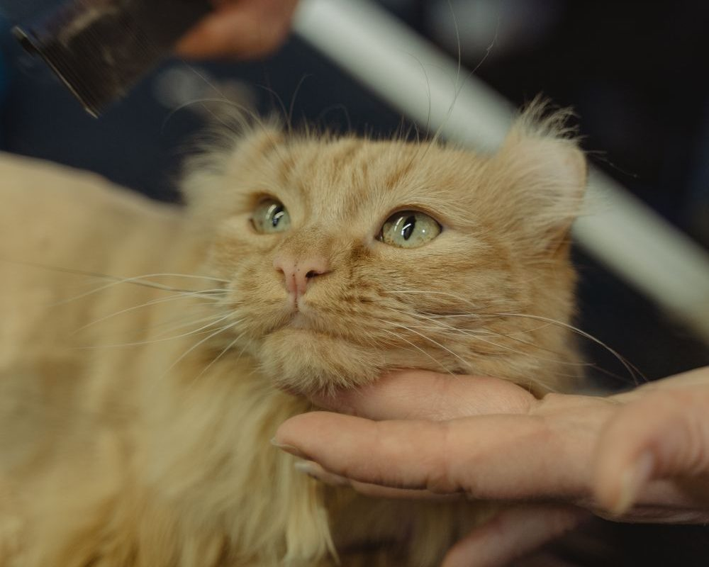

Banho e tosa · Hidratação · Feitosa
Mais de 20 anos cuidando do seu pet com amor
Banho, tosa, hidratação e penteados no Feitosa, com amor, carinho e respeito pelo seu pet. Agende pelo WhatsApp.
Mais de 20 anos de experiência
-
Banho
Produto certo pra cada tipo de pelo
-
Tosa
Higiênica, na tesoura e de raça
-
Hidratação
Pelo macio e saudável
-
Penteados e laços
Pra sair lindo de verdade
Mais de 20 anos cuidando do seu pet
Um banho e tosa de família, com 20 anos de estrada
A Patinhas & Estilo é um banho e tosa familiar no Feitosa, comandado pelo groomer Alan Cirino, com mais de 20 anos de profissão e várias especializações em tosa. Aqui cada pet é tratado com amor, carinho e respeito, do primeiro banho ao último lacinho.
- Mais de 20 anos de experiência
- Groomer certificado em tosa
- Atende cães, gatos e silvestres
- Agendamento pelo WhatsApp
Nossos serviços
O que a gente oferece





Quem cuida do seu pet
Nossos profissionais
-
Alan Cirino Groomer · Mais de 20 anos de profissão
Certificado em tosa na tesoura, tosa Shih Tzu, tosa de Spitz e outras especializações. Cuida de cada pet como se fosse dele.
Formação
Especializações ao longo de 20 anos de profissão
- Workshop Perigot
- Pet Grooming Maceió (IBASA)
- Elite de Groomers (IBASA)
- Especialização em Tosa na Tesoura (CTP Alagoas / Styllo Animal)
- Pet Grooming IBASA: tosa Shih Tzu e suas variações (Camilla Caetano, 2022)
- Pet Grooming Maceió: tosa de Spitz (Leandro Santos, 2025)
- Experience Groomer, 2ª edição (2025)
Mensagens reais de tutoras no Instagram
O que dizem
Quem já veio
Nossa loja, no Feitosa
Aberto até 18h de segunda a sexta
Onde estamos
- Rua Noêmia Campos, 2275-C (esquina com Rua Artur Maier Leite), Feitosa, Maceió/AL, 57042-560
- (82) 98751-7744
Horário de atendimento
- Segunda a Sexta08:00 às 18:00
- Sábado08:00 às 13:00
- DomingoFechado